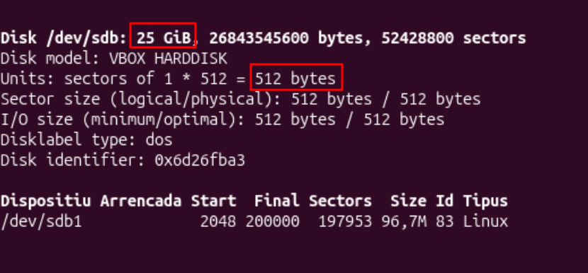

1. Sistemes de fitxers i particions
Estructura física d'un disc
Què és?
És com és el disc per dins, el maquinari de veritat. Un disc dur té plats que giren i la superfície
es divideix en trossos molt petits que es diuen sectors. Un SSD no té plats, però també treballa amb sectors.
El sector és la unitat més petita que el disc pot guardar a nivell físic. Al meu disc virtual /dev/sdb
(25 GiB), cada sector fa 512 bytes.

/dev/sdb: 25 GiB i sectors de 512 bytes.Estructura lògica d'un disc
Quins dos formats hi ha?
L'estructura lògica és com es reparteix el disc en parts (particions). Per això el disc té un "mapa" que diu on comença i acaba cada part. Hi ha dos tipus de mapa:
MBR
És el mapa antic. És senzill, però només admet 4 particions principals i discs de fins a uns 2 TB.
GPT
És el mapa modern. Admet moltes més particions i discs molt grans, i guarda una còpia del mapa per si es fa malbé.
Quan vaig obrir fdisk /dev/sdb, em va dir "Created a new DOS (MBR) disklabel": el meu disc nou
va quedar amb MBR.

fdisk crea un mapa MBR al disc nou.